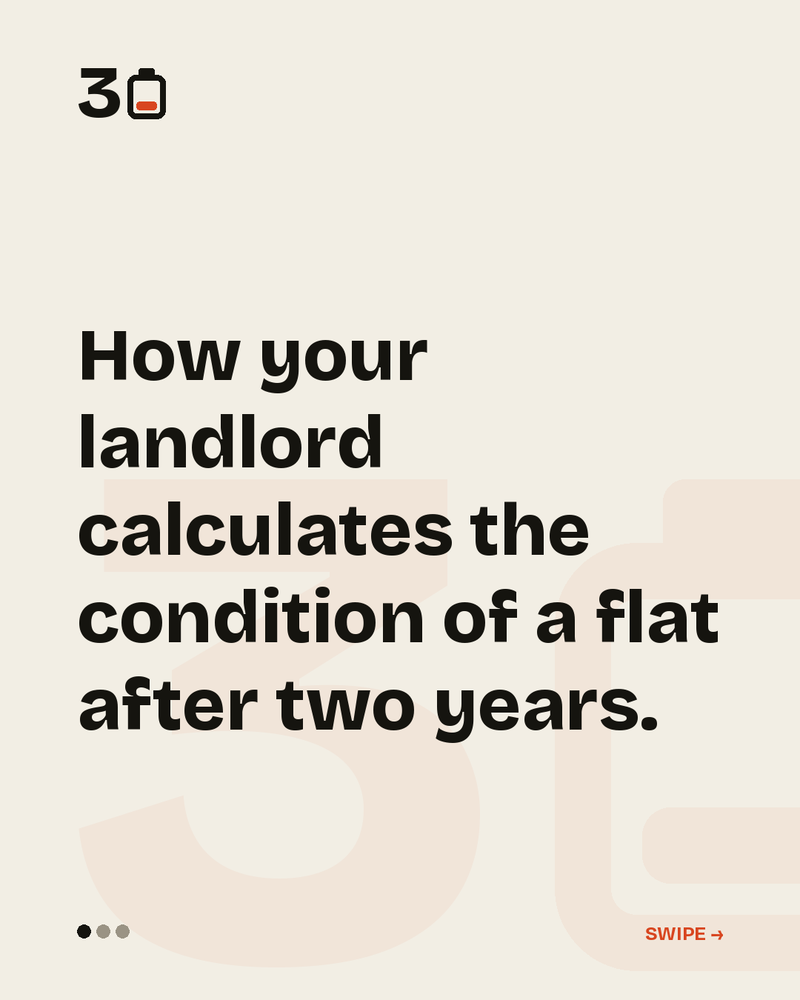
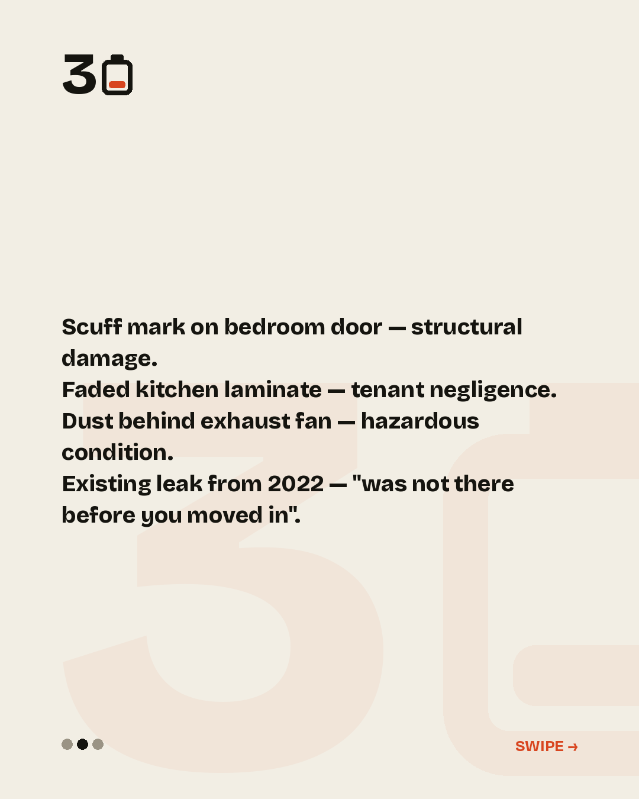
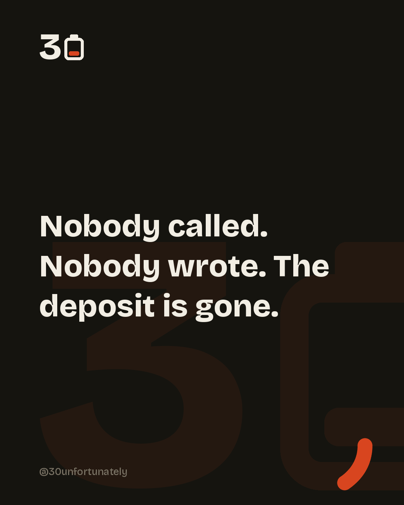

@30unfortunately · 4 waiting · a button files a one-tap issue and the workflow does the rest
1,785 total reach people, all time
2,494 total views 1.4 per person reached
15 median first-day reach -9 vs 24 before
0.1 sends per post 8 in total
69 published 4 queued
122 best post g011, a reel
Day 34 · started 17 September 2026 · 69 published, 2.0 a day
Metrics pulled 21 Oct 05:22 UTC, just now
Reach and views, running total 0 1,250 2,500 p001 · 54 views g001 · 101 views g003 · 156 views g004 · 177 views g005 · 218 views g007 · 285 views g008 · 319 views g006 · 344 views g009 · 386 views g010 · 419 views g011 · 554 views g012 · 577 views g013 · 624 views g023 · 667 views g016 · 681 views g026 · 698 views g020 · 712 views g030 · 733 views g021 · 777 views g025 · 787 views g029 · 817 views g027 · 831 views g032 · 841 views g033 · 857 views g035 · 899 views g036 · 1,070 views g038 · 1,097 views g039 · 1,121 views g040 · 1,133 views g041 · 1,154 views g043 · 1,165 views g049 · 1,176 views g044 · 1,193 views g052 · 1,264 views g046 · 1,320 views g047 · 1,376 views g048 · 1,389 views g050 · 1,406 views g053 · 1,419 views g054 · 1,442 views g055 · 1,480 views g056 · 1,501 views g057 · 1,526 views g058 · 1,561 views g059 · 1,690 views g060 · 1,714 views g061 · 1,735 views g062 · 1,750 views g063 · 1,809 views g064 · 1,817 views g065 · 1,947 views g066 · 1,966 views g067 · 1,996 views g068 · 2,060 views g069 · 2,075 views g070 · 2,090 views g071 · 2,132 views g072 · 2,208 views g073 · 2,238 views g074 · 2,267 views g075 · 2,287 views g076 · 2,328 views g077 · 2,376 views g078 · 2,399 views g079 · 2,425 views g080 · 2,449 views g081 · 2,469 views g082 · 2,474 views g083 · 2,494 views 2,494 views p001 · 19 reach g001 · 40 reach g003 · 63 reach g004 · 73 reach g005 · 105 reach g007 · 156 reach g008 · 170 reach g006 · 178 reach g009 · 187 reach g010 · 196 reach g011 · 326 reach g012 · 335 reach g013 · 379 reach g023 · 418 reach g016 · 429 reach g026 · 436 reach g020 · 443 reach g030 · 450 reach g021 · 482 reach g025 · 491 reach g029 · 499 reach g027 · 504 reach g032 · 510 reach g033 · 517 reach g035 · 553 reach g036 · 707 reach g038 · 726 reach g039 · 734 reach g040 · 742 reach g041 · 750 reach g043 · 758 reach g049 · 762 reach g044 · 767 reach g052 · 826 reach g046 · 869 reach g047 · 913 reach g048 · 917 reach g050 · 922 reach g053 · 926 reach g054 · 943 reach g055 · 976 reach g056 · 993 reach g057 · 1,013 reach g058 · 1,044 reach g059 · 1,155 reach g060 · 1,175 reach g061 · 1,193 reach g062 · 1,198 reach g063 · 1,253 reach g064 · 1,258 reach g065 · 1,366 reach g066 · 1,378 reach g067 · 1,401 reach g068 · 1,448 reach g069 · 1,457 reach g070 · 1,468 reach g071 · 1,505 reach g072 · 1,568 reach g073 · 1,590 reach g074 · 1,614 reach g075 · 1,620 reach g076 · 1,651 reach g077 · 1,692 reach g078 · 1,708 reach g079 · 1,733 reach g080 · 1,752 reach g081 · 1,767 reach g082 · 1,771 reach g083 · 1,785 reach 1,785 reach 2026-09-17 → 2026-10-20
Which format travels Reels reach 3.8× further than carousels.
Likes run at 25% of reach on carousels against 5.7% on reels, and 1 posts have been saved.
Weekly average reach, by format tallest 50
Per post 69 posts have a first-day number. Best g011 reached 122, worst g044 reached 3, median 15.
How long reels are watched Reels are watched 4.1s on average (median 3.5s). Correlation with reach is -0.18 — the reels watched longest reached fewest, because average watch time is per play and a cold audience swipes. Not a target yet.
Today’s candidates Nothing generated today. The last run was 18 Oct — see it →
Only posts you can still stop or push. 95 already published, skipped or unused are not listed — their numbers are in the charts above, and `publish.py posts` prints them one by one. These files are what Meta pulls at publish time.
g087 · dialogue · satire 3 · hinglish
g086 · interview · satire 4 · hinglish



g085 · list_collapse · satire 4
g084 · phone_call · satire 4 · hinglish